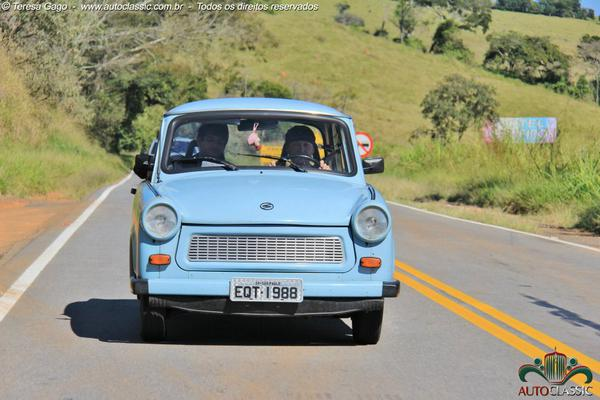
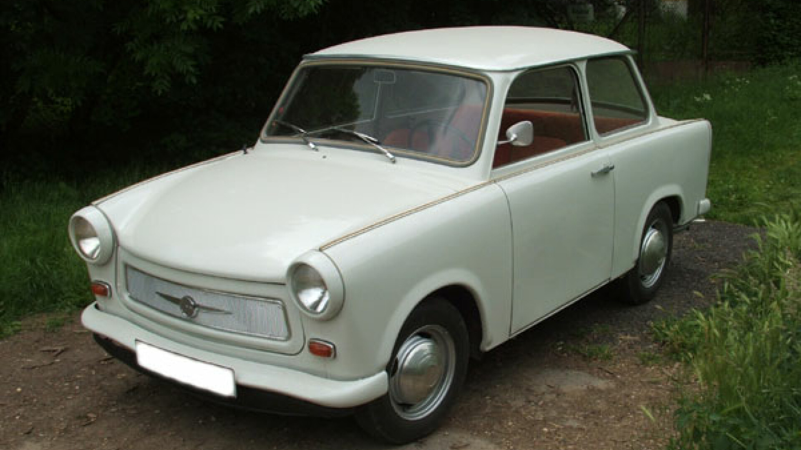
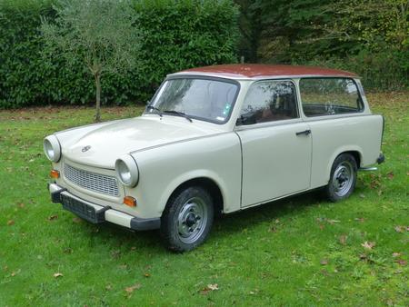
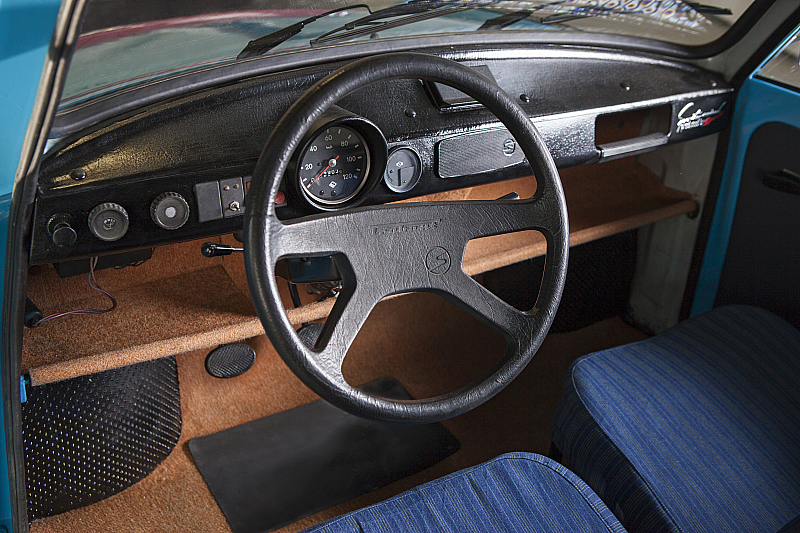
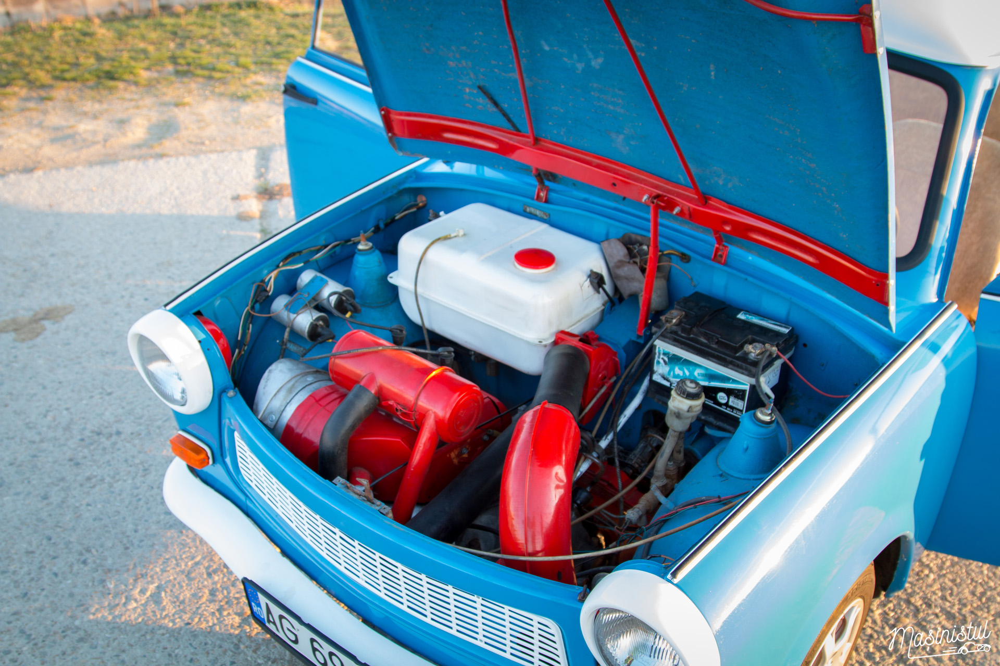
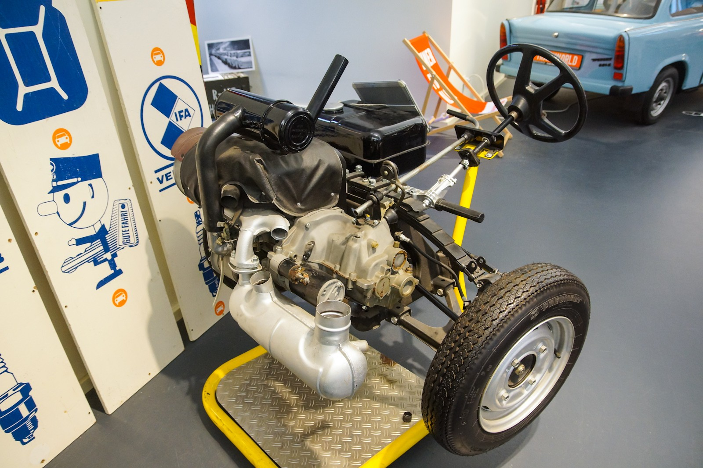
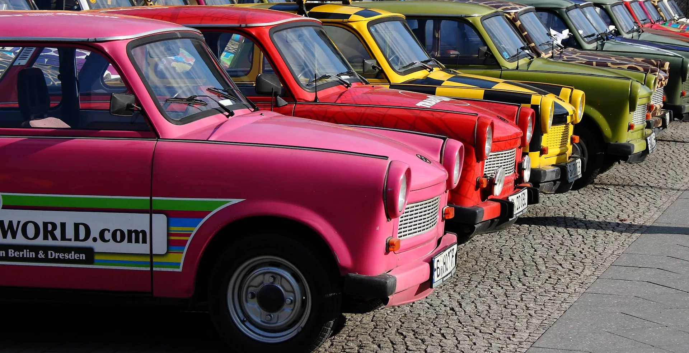
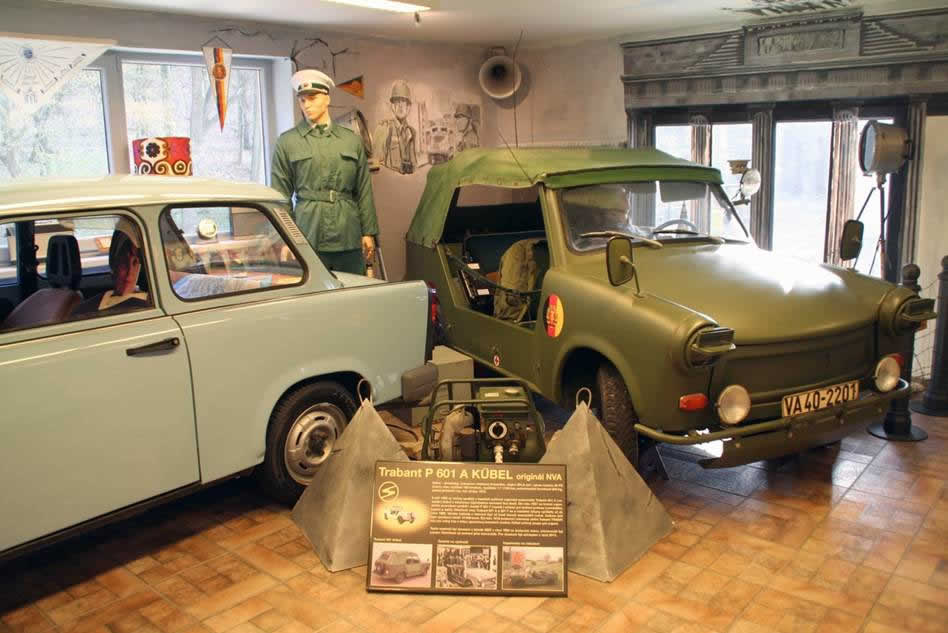

Mașină accesibilă: Trabant a fost una dintre cele mai accesibile mașini pentru cetățenii din RDG.
Simplă de reparat: Datorită construcției sale simple, Trabantul era ușor de întreținut.
Proiectat pentru utilizarea zilnică: A fost creat pentru a satisface nevoile de transport ale familiilor obișnuite.
Consumul mic de combustibil: Era eficient din punct de vedere al consumului, fiind ideal pentru utilizarea urbană.
Simbol al epocii socialiste: A devenit un simbol cultural și nostalgic al anilor '70 și '80.
Tabelul cu Specificații Tehnice - Trabant 601
Caracteristică
Detalii
Observații
Anul de producție
1963 - 1990
Aproximativ 3 milioane produse
Motor
2 cilindri, 594 cm³
Motor în doi timpi, pe benzină
Putere
26 CP
Ideal pentru viteze mici
Viteză maximă
100 km/h
Potrivit pentru oraș
Accelerație 0-100 km/h
Aproximativ 21 secunde
Lentoare specifică modelului
Consum de combustibil
7-8 L/100 km
Eficiență economică
Material caroserie
Duroplast*
„Carton” din plastic armat
Scurtă istorie a Trabantului
1960: Trabantul 601 este lansat de fabrica VEB Sachsenring în fosta Republică Democrată Germană. Producția sa începe ca o soluție accesibilă pentru cetățenii din RDG, la problema transportului.
1963: Trabantul devine rapid popular datorită prețului său scăzut și a caracteristicilor rudimentare. A fost perceput ca o mașină fiabilă pentru familiile obișnuite.
1970: Până la acest an, aproximativ 1 milion de unități erau deja produse. Trabantul devine un reprezentant al circulației rutiere în Europa de Est.
1980: Producția acestuia atinge apogeul, iar cererea depășește capacitatea de producție. Mulți oameni așteptau ani întregi pentru a obține un Trabant nou.
1989: Căderea Zidului Berlinului deschide noi oportunități pentru Trabant în vest. Mașina devine un simbol al tranziției către democrație și a libertății de mișcare.
1990: Producția se încheie oficial, dar Trabantul continuă să fie un simbol nostalgic al anilor socialiști. Ultimele unități sunt produse în timpul tranziției către o economie de piață.
2000: Trabantul devine un obiect de colecție. Pasionații din întreaga lume încep să recondiționeze și să valorifice modelele originale, apreciind designul său retro.
2003: Se organizează primul festival internațional dedicat Trabantului în Germania, adunând iubitori din întreaga lume. Acest eveniment subliniază impactul cultural al modelului.
Prezent: Trabantul rămâne un simbol al nostalgiei pentru generațiile care l-au cunoscut, iar modelele restaurate continuă să participe la evenimente auto și parade, menținând vie amintirea acestuia.
Galerie de imagini

Trabant 601 S

Versiunea standard(sedan)

Versiunea break* a mașinii

Interiorul rudimentar al autoturismului

Motorul în doi cilindrii

Motorul și transmisia(foarte rudimentare)

Festivalul Trabantului din Berlin

Muzeul Trabantului din Cehia
Procesul de fabricare al unui Trabant in anii '70
Test drive cu un trabant
Viteza maximă a unui Trabant 601 este de 100 km/h, iar în marșarier este de aproximativ 5-10 km/h.